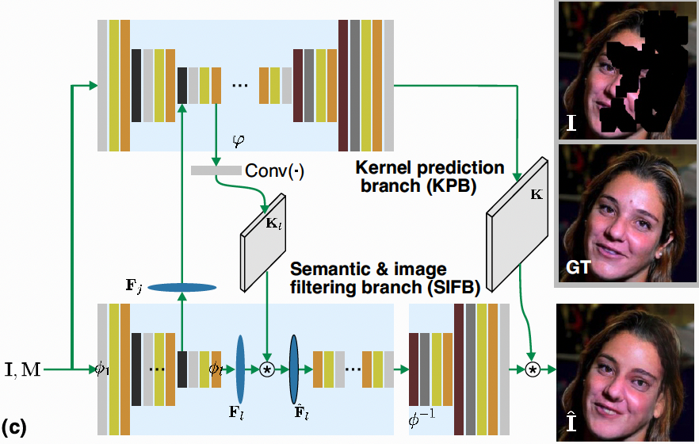
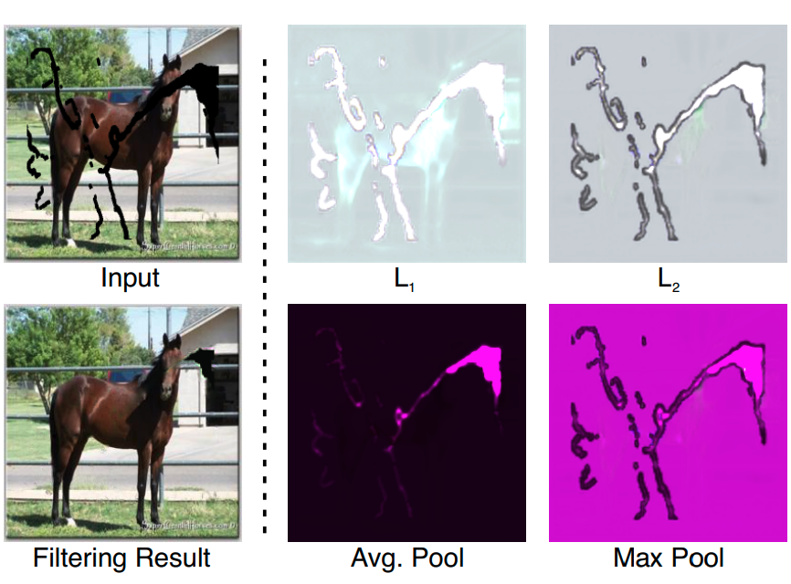
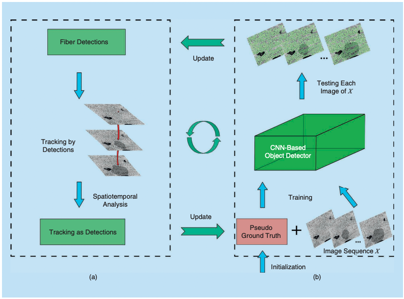

Google Scholar
Google Scholar
 GitHub
GitHub
 xl22@email.sc.edu
xl22@email.sc.edu
About me
I am currently a third-year Ph.D. student at the University of South Carolina. My research interests are computer vision, especially for image&video restoration and object detection, e.g image&video inpainting, shadow removal, and image super-resolution.
Education
- 2020 - present, Ph.D. in Computer Science, University of South Carolina
- 2020 - 2022, M.S. in Computer Science, University of South Carolina
- 2009 - 2013, B.S. in Computer Science, Zhengzhou University
Academic Services
- Reviewer of Conference on Computer Vision and Pattern Recognition (CVPR)
- Reviewer of International Conference on Computer Vision (ICCV)
- Reviewer of Pattern Recognition Letters (PRL)
- Reviewer of IEEE Transactions on Multimedia (TMM)
Publications
|  | |
|  | |
|  |
|